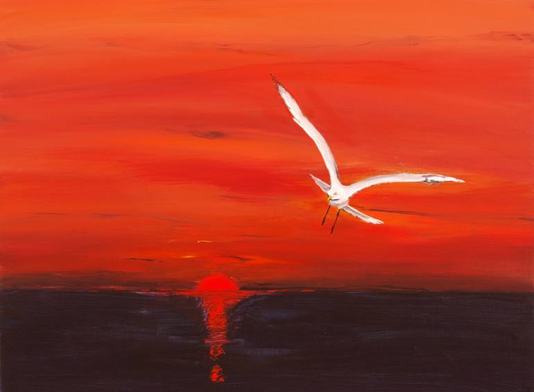
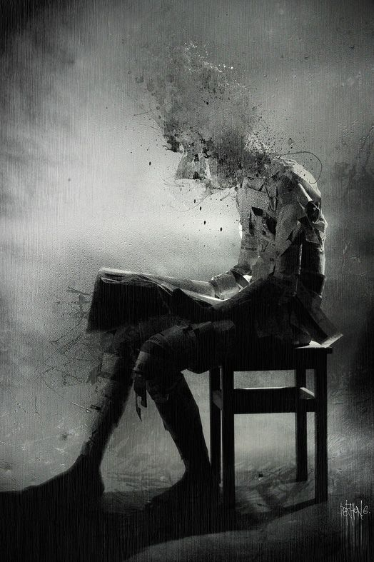
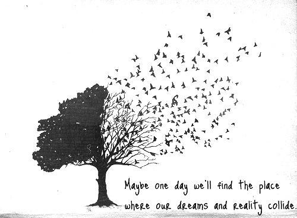

Syed Abbas  Tahirzadeh
Tahirzadeh
Envision. Inspire. Innovate.
"If you were to design a story with me as the lead character, it would certainly be..... unique."
-Abbas Tahirzadeh
August 25th, 2016
Quote #12
“No one started out with the strength to lift the world.”
- A. T.
August 14th, 2016
Quote #11
“Peasants (followers) bask in the light of kings hoping to share in his successes - striving to attain this illusion of perfection. Kings (leaders) reside in the twilight of darkness, away from the masses reaping the rewards of those that refuse to accept the faults of their nature - lamenting the greed of his followers.”
- A. T.
July 27th, 2016
Quote #10
“See life for what it is; not for what it was, but for what it is to be.”
- A. T.
June 20th, 2016
In Blood & Oil

To Be Updated. (Poem about the Blood Oil Pigeon)
- A. T.
July 13th, 2016
Quote #9
“It's easier to look at excuses of your own ideals than it is to look at incorrigible facts of reality.”
- A. T.
July 1st, 2016
Quote #8
“Even snakes don't know the lethality of their own venom.”
- A. T.
June 22nd, 2016
Quote #7
“If you’re happy, explode with exuberant emotions to the whole world; Break your barriers of restraint and seek new heights of happiness.”
- A. T.
June 10th, 2016
Inheritance

I’m not talking about the concept of inheritance seen in many programming languages; nor am I bringing up a point from a genetic basis. This post I’m writing about is trying to stimulate a thought and understanding of the true tragedy of humanity. Often times, we’re brought into the line of thinking that we have full control over everything that happens in our lives. What we want to study for in college, whether we choose to help a certain person or not, or even the type of literature/movie/song are all things that we choose to like. Wrong. We didn’t choose anything; everything about who we are was inherited from the world – the environment from which we were exposed to.
I just wanted to bring the point that most people don't necessarily 'choose' to be who they are. Inadvertently, our life experiences really influence how we see the world and what 'decisions' we choose when we come to a fork in a road of life. It always brings me to question how someone can bring so much hate to certain groups of people. And while there are stereotypic behaviors to some ethnic, religious, or various other ideological groups – I want to address the group that everyone seems to universally hate. The bad guys – the criminals, the murderers, the racists, the crazy – and so many other sub groups targeted to be evil. Now understand, I’m not condoning their actions or even defending them for the matter. I simply want to bring the understanding that these unfortunate people are byproducts of a cruel and unfair world. No one inherently wants to be a bad guy. It's not like someone who was abused or had a rough upbringing can just flip a switch and be a good person again. It’s one of those points that are really hard to fully comprehend until you’ve lived a lifetime – their lifetime – in their shoes.
In a sense, it's a mental illness brought about by these unfortunate experiences. The same way you don't just pick up a knife and stab the person next is the same way that a person with a rough upbringing can't just spontaneously turn a good leaf. It’s really a hard concept to understand, and I admittedly suffer from the same judgement. Sociopaths and the like all view themselves as fully justified beings while the rest of the world is against them. In their eyes, the rest of the world is flawed, and they’re normal people. Now the question is: how did this kind of skewed mindset arise? Two problematic points are the origins of such, parents and the environment. Essentially, bringing back the heated debate of nature vs nurture, and the effect it has on our personalities. Now, I’ve already discussed how events we are exposed to in our daily lives subtlety affects us; the other point is parents.
Now, I have nothing against parents. I’ve been blessed with two very able people to bring me into this world and guide me to the best of their ability throughout life. But they’re flawed human beings. Unfortunately that’s life and the fact that anyone could even imagine themselves as perfect is living in nothing but a life full of illusions. Although this is my opinion, I believe bringing a child into this world is purely motivated through selfish desires. (Continued Later...)
- A. T.
May 25th, 2016
Quote #6
"Don't think of yourself as the hero of your story, when you do that and there's a fault, suddenly everyone else becomes the 'bad guy'."
- A. T.
May 15th, 2016
Quote #5
"Only you are as striped as life's zebra."
- A. T.
May 5th, 2016
Quote #4
"Every person has three kinds of selves; the self they protray in public; the self they present with their close friends and family; and finally, the self that exists when they're by themselves - our truest reflection of who we are."
- A. T.
TBD
What is Life? Doctors, Science, Religion, and 'Hope'.
Content to be added. Written piece will involve a discussion on the ethics of abortion, euthanisia, eugentics, rise of religion, and disparities among way of life vs beliefs.
TBD
To You, Philosphically Political
Content to be added. Written piece will involve Sanders & Trump, mentality of the Americans, and policies regarding issues seen in the primary debates.
April 27th, 2016
Quote #3
“The reason ideas and expressions are repeated in some poetic sense is not because they are reifications of an author’s creative intelligence; but rather, the unfortunate result of some inherent insufferable complex of that individual’s innate self.”
- A. T.
April 7th, 2016
"Written Gray: Raamzic"

“I – I’m so scared. I’m so scared for what’s going to happen. . . how can someone who has no memories, no memories of being loved, no memories of having ever lived happily, no memories of truly being accepted, ever be allowed to live?
As a child, I never received the minimum love needed to experience something differently. I tried to help people, but in the end I only suffered in doing so. Maybe I was trying to catch this illusion that I could change things. Or was I trying to convince others that I was someone to be loved. Or maybe it was just me that I was trying to convince. . . that I could be someone that could be loved.
You know, I once saw a one winged bird back there, back then with the corpses. It was trying to fly and escape, but it was tied down, no. . . chained down, to this world because it was born wrong. Rejected by all others it knew, I’m sure it slowly succumbed to death.
. . . So when I see someone like me, who’s never felt the warmth, someone who’s always told to sacrifice more, someone who was born wrong - ever be expected to do the right thing and love the world in return?
Was it something I did? Or something predetermined for me?
I don’t know… I’m trying to do the best that I can, but all it leads to is painful emptiness. I can’t even hate like you do – maybe it’s because I’ve never had anything to even lose.
Sometimes I think I wasn’t meant to belong – an unnecessary piece to an otherwise simple puzzle. A fly trapped with the dew of a silky web – an empty snare, but with the absence of my reaper.
It’s better for everyone, the world, and even you if I just disappear. Like the world intends for me. I can’t bring myself to do it, I’m scared. Not for myself, but for others like me. Nobodies. People begging for help with their speechless voices. I want to die in style! With a smile on their faces. I want to die helping them than wastefully give up this nameless life I lead.
Sometimes I think sayings and meanings exist only to disappear in the abstract thoughts of those that gone mad.
So, what about a nobody like me? Can I continue to live?"
- "Written Gray: Raamzic"
January 30th, 2016
My (Presumed) Last Year of University

It wasn't that long ago that I stood outside the doors of Kane Hall at 8am waiting to go into my CHEM 142 class. A lot has changed since then as well as a lot of things remaining the same. Although I could go on and on about all of the difficulties, fun, and mistakes that I have undergone since my time as a youthful freshman, I'm going to make one point. Heading to my first class of my first quarter at UW, nothing could have prepared me for what to expect going forward. Much of it is like life in this regard. We often have our lives planned straight from the beginning, but those aren't necessarily the most memorable parts that we retain later on in life. It's the unexpected occurrences that unhinge us from our perceived path to success and truly question our ability to adapt and growth.
Life is like walking down a set of stairs in the dark and thinking that there is one more stair than there actually is. Your foot falls through the air downward and there is a surprising moment of dark desperation as you try and readjust your movement. The people that can correct themselves end up successful. Those that fall, don't. This is life.
- A. T.
January 17th, 2016
Quote #2
"How bliss would it be to lose myself to insanity like this?"
To add some context to this, this is basically one of the few protagonist in my story that is having a difficult time reconciling who he actually is and who he is meant to be in a world that doesn't necessarily favor his existence. Some cirumcstances that occur negatively affect his sanity, and he's really holding on to accomplish a given goal. This is all very vague, but I'm sure if the future allows it, the entire story will make sense later. Just know that everything is a struggle, just learn to accept that such things occur and never lose yourself to that part of you that you don't want to be.
- "Written Gray: Raamzic"
January 7th, 2016
Quote #1
"I'm merely a reader of a cruel, senseless book known as life. When I give advice, I'm merely peeking at the next few pages, so while I can try to give you some inspirational saying over and over again, you're the one that needs to rewrite the ending."
- A. T.
January 4th, 2016
From Quotes to Blogs
I'm going to be adding quotes from characters and their respective stories that I have created. Do note that all of these stories are unpublished and are merely the result of my imagination and willing to convey the realities of life in a digestable, metaphorical fashion. These can be oddly philoshopical, or they can simply be 'strong' moments in a story based context. To add some brevity to this, anything sounds profound if you throw quotes around it, hahahaha.
- A. T.
January 1st, 2016
Start of Something Great
Welcome to my blog. Occasionally, I'll be posting content on things that I find interest, should be mentioned, or just random thoughts that are floating around in the dark crevices of my mind. Usually, most of these updates are reflections of what's been going through my head or merely observations of work, school, or everday life. Feel free to connect with me through social media or in person if you would like to talk more about anything on my blog. Stay tuned and connected!
- A. T.
© Abbas Tahirzadeh | Raamzic@gmail.com